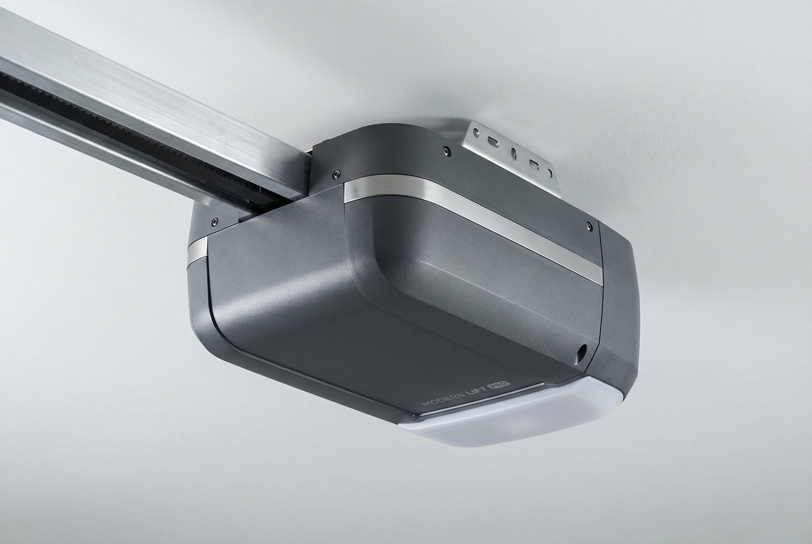
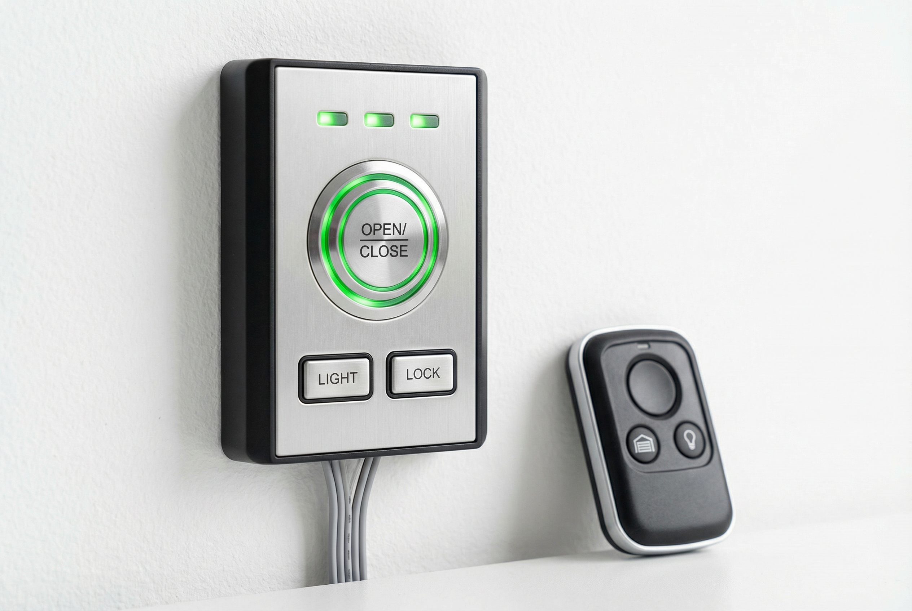
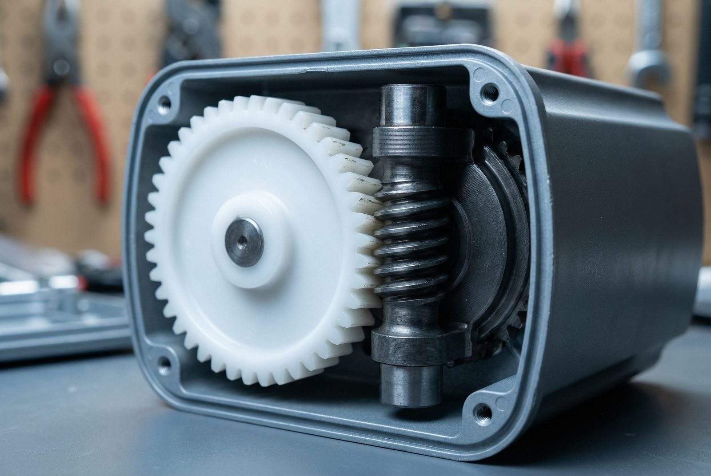

Your garage door opener does its job quietly in the background — until the day it doesn't. Whether you're sitting in your car watching the door refuse to move, hearing a grinding noise that wasn't there last week, or coming home to find your remote simply stopped working, a failed opener is one of the most frustrating home problems a Gilbert homeowner can face. At Gilbert Garage Door Pro, we diagnose and repair garage door openers of every brand and vintage, typically the same day you call.
Opener problems in Arizona come with their own set of complications. The desert climate puts mechanical components through a punishing cycle of extreme heat, UV exposure, and temperature swings that wear out motors, dry up lubricants, and cook circuit boards years before they would fail in a milder climate. Often, a failing opener also puts extra strain on your garage door springs, compounding the problem. Our technicians understand these local conditions because we work in them every day. When we assess your opener, we're not just looking at the immediate failure — we're checking for the underlying heat- and wear-related issues that led to it.
If you're dealing with an opener that has completely stopped responding, call us at (480) 555-0199. For urgent situations where your door is stuck open or you can't secure your home, we offer 24/7 emergency garage door repair throughout Gilbert and the East Valley.

Opener failures rarely happen without warning, though the warning signs are easy to dismiss until things get worse. Here are the most frequent issues we see in Gilbert homes — and what they typically mean.
The motor is the heart of your opener. In Arizona's summer heat, garage interiors routinely reach 130–140°F, and an opener motor working in that environment is under tremendous thermal stress. When the motor burns out, the opener may hum but not move the door, or it may simply stop responding entirely. In some cases the thermal overload protector trips to prevent further damage — we'll test both the motor and the protector to determine whether a repair or full motor replacement is the right call.
Most residential openers use a set of plastic drive gears that mesh with a metal worm gear on the motor shaft. These plastic gears are designed as a sacrificial component — they're meant to wear before the motor does. When they strip, you'll hear the motor running but the door won't move, or you'll notice a grinding or chattering sound during operation. Gear replacement is one of the most common opener repairs we perform and is usually a cost-effective fix that restores full function.
Before assuming your opener itself has failed, it's worth ruling out the accessories. Dead batteries, a remote that's been desynced, or a keypad with corroded contacts are all simple fixes. However, if multiple remotes stop working at once, the issue is more likely a failed radio receiver inside the opener head or interference from a nearby source. We carry replacement receivers and remotes compatible with all major opener systems and can reprogram them on the spot.
If your wall-mounted button has stopped triggering the opener, the problem is usually one of three things: a broken wire in the low-voltage wire run between the button and the opener, a faulty button assembly itself, or a logic board issue inside the opener. We trace the circuit to identify the failure point, which saves time and avoids unnecessary parts replacement.
Chain drive and belt drive openers use a tensioned drive mechanism that runs on a rail. Over time, chains stretch and sag, and belts can develop cracks or lose tension. A loose chain slaps against the rail, creates excessive noise, and can eventually cause the door to stall mid-travel or reverse unexpectedly. Arizona's heat accelerates belt degradation in particular. Proper tensioning or replacement of the drive assembly restores smooth, quiet operation.
The logic board inside your opener controls everything: the motor, the lights, the safety sensors, the remote receiver, and the travel limits. Heat is the primary killer of circuit boards, and in Gilbert's summer temperatures, a board in an uncooled garage may fail years ahead of schedule. Signs of board failure include erratic behavior (door reversing for no reason, lights flashing in unusual patterns, opener activating randomly), or a complete loss of all functions. Circuit board replacement requires matching the exact board to the opener model — we stock boards for the most common brands and can source others quickly.

Gilbert homes are equipped with openers from virtually every manufacturer on the market, spanning 30 years of models. Our technicians are trained and equipped to service all of them.
Don't see your brand listed? We service all openers. Call (480) 555-0199 and describe what you have — we'll tell you upfront whether we carry the parts or need to order them, and give you an honest timeline.
Arizona's desert climate is exceptional in its demands on mechanical equipment. Most garage door openers are designed and tested for ambient temperatures up to around 104°F (40°C). In Gilbert, that threshold is regularly breached outdoors from June through September — and inside an uninsulated garage, temperatures routinely hit 130°F to 140°F or higher during peak afternoon heat. That's a significant gap between design specs and real-world operating conditions.
Thermal overload protector trips: Nearly all opener motors include a thermal overload protector that shuts the unit down when it reaches a critical temperature. This is a safety feature, but in Gilbert it activates far more frequently than in cooler climates. If your opener works fine in the morning but stops responding in the afternoon, only to come back after an hour or so, this is almost certainly the cause. Repeated thermal cycling stresses the motor windings and capacitor, shortening their lifespan. Insulating your garage ceiling and walls is the best long-term prevention — but if the motor itself has already been compromised, service is needed.
Lubricant breakdown: Opener drive systems — whether chain, belt, or screw — depend on lubrication to reduce friction and wear. Conventional lithium grease and machine oil thin out and migrate away from contact surfaces in extreme heat, leaving metal-on-metal contact. Screw drive openers are particularly sensitive to this, as they require thick grease on the screw carriage. We use synthetic lubricants rated for high-temperature performance when servicing Gilbert openers, and we recommend that homeowners inspect and re-lubricate chain and screw drives at least once per year.

Circuit board degradation: Electronic components have defined operating temperature ranges. PCB-mounted capacitors, relays, and integrated circuits lose reliability as they're repeatedly cycled through extreme heat. Electrolytic capacitors — found in both the motor start circuit and the logic board power supply — are especially vulnerable; their electrolyte evaporates faster in heat, causing capacitance to drop and eventually leading to hard failures. This is why circuit board failures are disproportionately common in Arizona homes compared to the national average.
UV impact on belts and plastic components: The intense UV radiation in the Southwest degrades rubber belts, plastic gears, and the rubber-coated wire in safety sensors faster than in other regions. Belt drives that might last 15 years in a Midwest climate may show cracking and delamination within 8–10 years in an uncooled Arizona garage. When we inspect an opener, we check belt condition as a matter of course — a cracked belt is a failure waiting to happen.
The International Door Association recommends annual garage door and opener inspections to catch wear before it leads to failure. In Gilbert's climate, we'd argue that's the bare minimum. Our seasonal maintenance visits include lubricating all moving parts, testing safety reverse and auto-reverse, inspecting belt or chain tension, testing remote and sensor function, and assessing overall system condition. A $75–$100 maintenance call can easily prevent a $300–$500 repair down the road. Prices are estimates — see our cost guide for details or call for a free on-site quote.
Not all openers work the same way, and the type you have influences both the kinds of problems it's likely to develop and the repair approach. Here's a quick guide to the most common drive systems found in Gilbert homes.
The oldest and most common drive type, chain drives use a metal roller chain — similar to a bicycle chain — to pull the door trolley along the rail. They're robust and inexpensive to repair, but they're the noisiest option, which can be an issue if your garage is attached and adjacent to a bedroom. Chain drives do well in Arizona heat as long as they're kept lubricated. The most common repairs are chain tension adjustment, chain replacement, and sprocket wear. A well-maintained chain drive opener can last 15–20 years.
Belt drives replace the metal chain with a reinforced rubber or polyurethane belt, which dramatically reduces noise. They're the preferred choice for attached garages in newer Gilbert builds. The trade-off is that belts are more susceptible to heat degradation than chains. In Arizona, we recommend inspecting belt condition every two to three years and replacing at the first sign of cracking or fraying. Motor and circuit board issues are the same as chain drives — it's primarily the drive element that differs.
Screw drives use a threaded steel rod to move the trolley, with fewer moving parts than chain or belt systems. They're moderately quiet but sensitive to temperature extremes — the grease on the screw tends to thin in heat and thicken in cold, causing sluggish or stalled operation at the extremes. Arizona's summer heat makes regular lubrication with a high-temperature synthetic grease especially important for screw drive units.
Wall-mount openers attach to the torsion bar rather than hanging from a center rail. This design frees up ceiling space — popular in garages with high-lift or full-radius track systems, or in homes where ceiling obstructions would prevent a rail-mounted unit. LiftMaster's 8500 series is the most common jackshaft model in Gilbert. These openers have different failure modes than ceiling-mount units, and repair requires familiarity with torsion spring integration. Our technicians are experienced with jackshaft systems specifically.
This is one of the most common questions we field, and the honest answer depends on a few key factors. We always give homeowners our genuine assessment — we're not in the business of pushing unnecessary replacements, but we're also not going to recommend an expensive repair on a unit that will fail again in six months.
Repair usually makes sense when:
Replacement is usually the better investment when:
Modern openers have improved substantially. Today's LiftMaster myQ-enabled openers let you monitor and control your garage from your phone, receive open/close alerts, and integrate with smart home platforms. They're quieter, more reliable, and more secure than units from even a decade ago. If your opener is aging and you're considering an upgrade, we offer full garage door opener installation with same-day availability on most models. For a detailed look at what different repairs and replacements typically cost, see our garage door repair cost guide.
Visit LiftMaster's support page for model-specific troubleshooting guides if you want to do some preliminary diagnostics before calling us.
Gilbert Garage Door Pro provides garage door opener repair throughout Gilbert and the broader East Valley. Whether you're in Power Ranch, Cooley Station, Seville, or any of the communities in between, our technicians are nearby and stocked with parts for most common repairs.

Common warning signs include grinding or clicking noises during operation, the door reversing unexpectedly before it opens or closes completely, the remote or wall button not responding, the opener motor running but the door not moving, and intermittent operation that comes and goes. Any of these symptoms warrants a professional inspection — catching problems early is almost always less expensive than waiting for a complete failure.
Yes. We service LiftMaster, Chamberlain, Genie, Craftsman, Linear, Wayne Dalton, and all other major brands. Our technicians are trained on a wide range of systems and we stock parts for the most common models. For less common brands and older units, we can typically source parts within one to two business days.
Most garage door opener repairs in Gilbert fall between $100 and $400. Simple fixes like remote reprogramming or a new battery are on the very low end, while gear set replacement typically runs $150–$250 and circuit board replacement is usually $200–$350 depending on the model. Motor replacement can range from $200 to $400. Prices are estimates — see our cost guide for details or call for a free on-site quote. We always provide an upfront estimate before any work begins.
If your opener is over 15 years old, lacks modern safety features like auto-reverse, or has required repeated repairs in recent years, replacement is usually the more cost-effective path. A new opener costs $250–$600 installed and comes with a full warranty, improved safety, quieter operation, and often smart home connectivity. Prices are estimates — see our cost guide for details or call for a free on-site quote. If the opener is relatively new and the repair is a single discrete failure, repair almost always makes more sense. We'll give you an honest assessment and explain both options with pricing so you can make an informed decision.
Arizona's extreme summer heat is the most likely culprit. Garage interiors in Gilbert can reach 130–140°F during peak afternoon hours, well above the operating temperature range most opener motors are designed for. When the motor reaches its thermal limit, the thermal overload protector shuts it down to prevent permanent damage. Let the unit cool for 15–30 minutes and it will likely restart. If this happens repeatedly, the motor may be damaged or the opener may need attention. Improving garage insulation and ventilation is the best long-term fix — but if the motor has already been compromised by repeated overheating, it will need service. Call us at (480) 555-0199 and we can assess the situation.
Call us now at (480) 555-0199 — same-day service available.
Call (480) 555-0199